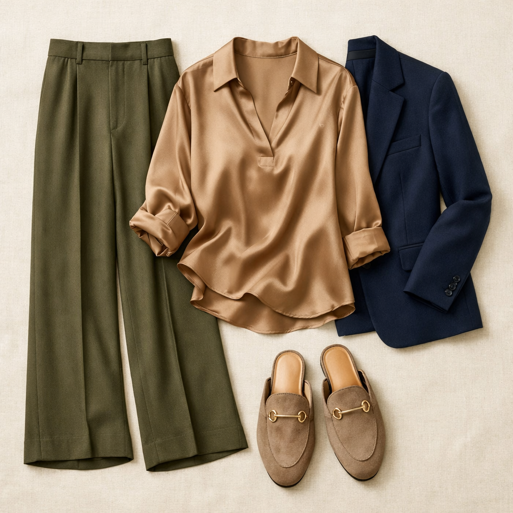
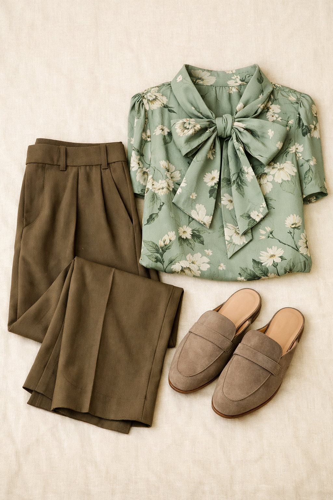
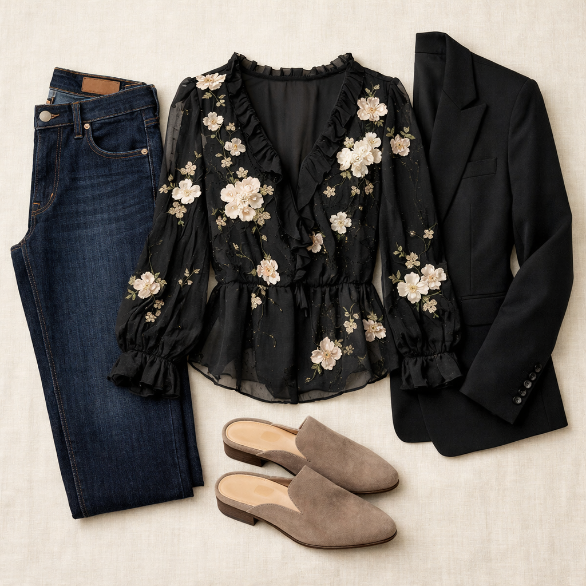

Steve Madden
Rafe Loafer Mule — Taupe Suede
$109
The backless loafer mule is the shoe trend that refuses to leave — and for good reason. The Rafe in taupe suede bridges the gap between sneakers and heels: more polished than flats, more wearable than pumps. The suede adds a luxe touch at an accessible price.
Shop NowWhy This Pick
A neutral taupe suede mule that makes every outfit look more intentional. The backless loafer silhouette is chicer than a flat shoe and more comfortable than a heel — it's the wardrobe upgrade that takes the least effort for the most return.
3 Ways to Wear It
Styled with pieces already in your closet

Look 1 — Tonal Warm Neutrals
Olive Brown Daydrift (Pick #3) + BR taupe satin blouse (Pick #6) + Navy Skies Are Blue ponte blazer (#203). Three capsule pieces in one complete outfit: the olive trouser and taupe blouse create a warm tonal base while the navy blazer adds structure and anchors the look.

Look 2 — Capsule Mashup
Mushroom Taupe BR wide-leg (Pick #1) + Aqua Foam bow blouse (Pick #4) — no jacket needed. Three new capsule picks working together as one polished outfit. The floral bow blouse + khaki trousers + taupe mules is the capsule's purest expression of effortless cohesion.

Look 3 — Classic With Edge
Dark wash straight leg jeans (#121) + Vera Wang black floral blouse (#61) + Black single-button blazer (#207). The mule elevates a classic jeans-and-blazer combo into something far more intentional. The taupe suede against dark denim is the quiet detail that makes the whole outfit click.